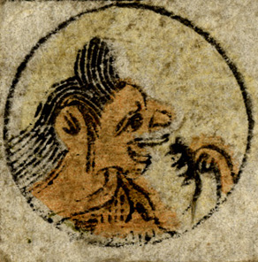

← 图鉴索引

彫りの深い男が、黒いトカゲのような生き物を食べようとしている。
出典：親書誌：U426_nichibunken_0238：妖怪十六むさし；ヨウカイジュウロクムサシ／日付：2010／資源識別子：U426_nichibunken_0238_0012_0000
Copyright (c)2010- International Research Center for Japanese Studies, Kyoto, Japan. All rights reserved.